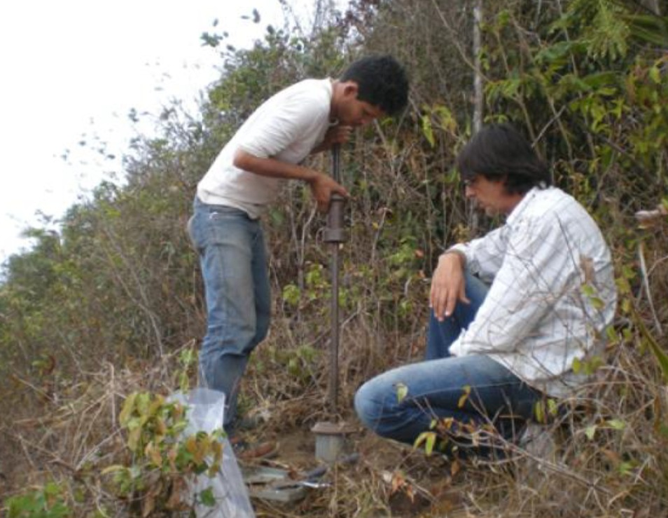

As sondagens são fundamentais em projetos de engenharia, pois permitem investigar as características do subsolo, identificar materiais presentes e obter informações essenciais para tomada de decisão em obras.
Qual a função das sondagens?
O principal objetivo é caracterizar os materiais do terreno, identificar camadas, nível d’água, resistência dos solos e comportamento geotécnico da área investigada.
Sondagem SPT
A SPT (Standard Penetration Test) é uma das mais utilizadas no Brasil. Ela fornece informações sobre resistência do solo e perfil estratigráfico, sendo amplamente aplicada em fundações e obras civis.
Sondagem Rotativa
Utilizada principalmente em maciços rochosos, a sondagem rotativa permite a retirada de testemunhos para análise geológica, geomecânica e estrutural das rochas.
Sondagem Mista
Combina métodos de percussão e rotativa, sendo indicada em locais onde há presença de solo e rocha na mesma investigação.
Importância para a engenharia
Os resultados das sondagens contribuem para definição de fundações, estabilidade de estruturas, avaliação de riscos geotécnicos e elaboração de projetos mais seguros.
Conclusão
A escolha correta do tipo de sondagem é essencial para obter dados confiáveis e reduzir incertezas em obras de engenharia. Investigações bem executadas aumentam a segurança, eficiência e qualidade dos projetos.